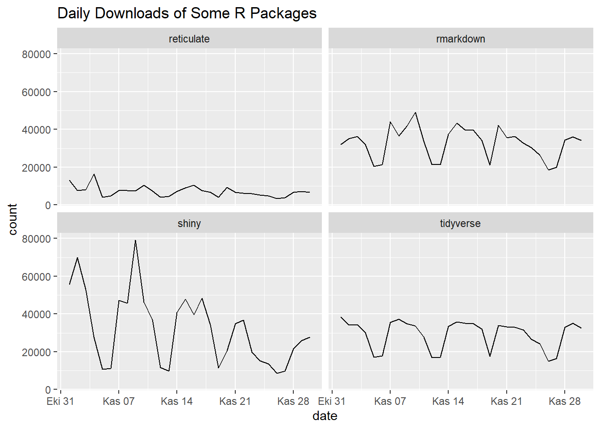
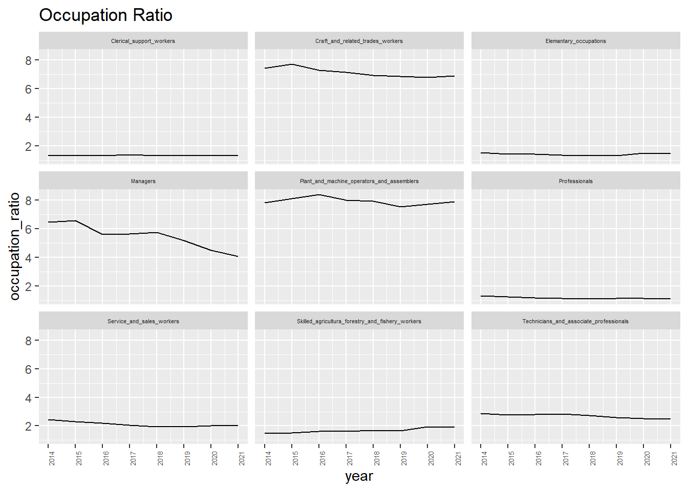
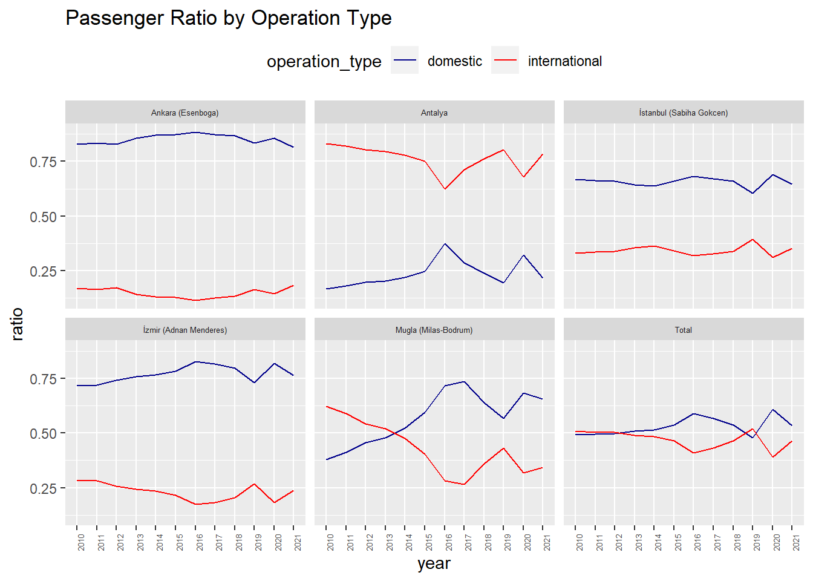
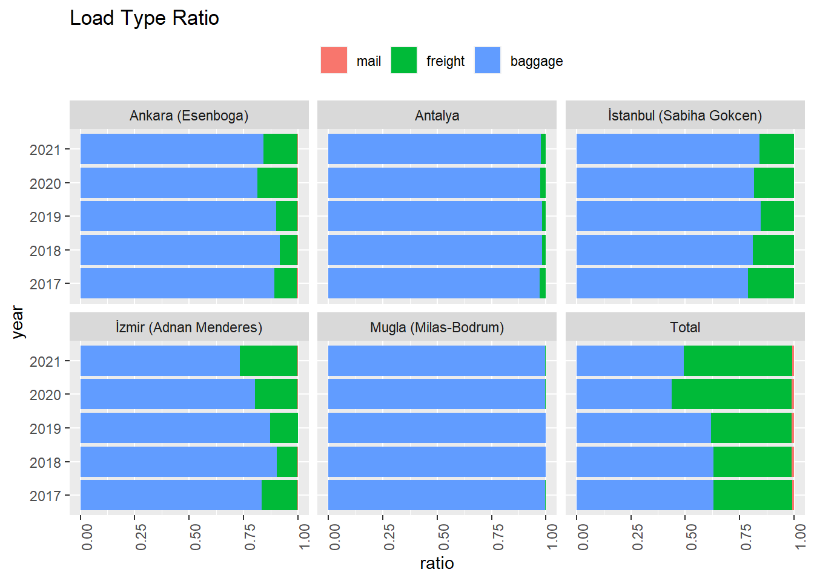
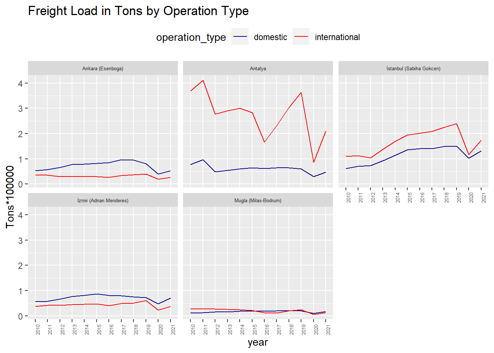

library(cranlogs)
library(dplyr)
library(ggplot2)
library(readxl)
library(tidyr)BDA503 Final Exam
Part I: Short and Simple
1.The Impact of Generative AI to Our World
It is possible that generative AI could potentially automate certain business tasks that currently require human input or decision-making. However, it is important to note that AI is still a long way off from being able to completely replace human workers in most cases. While AI can be very effective at automating certain tasks, it is generally not as good as humans at tasks that require complex problem-solving, creativity, or interpersonal skills.
Overall, it is likely that generative AI will continue to be adopted by businesses as a way to improve efficiency and streamline certain tasks, but it is unlikely to completely replace human workers in most cases. Instead, it is more likely that generative AI will augment human capabilities and allow workers to focus on more complex and higher-level tasks.
2.Steps for Automating a Process
Actually I am obsessed with automating tasks. When I start a task automation, it is like the tip of the iceberg. Business units mostly underestimate the importance of automation and have a hard time defining steps. However, if task automation succeeds and they are relieved from boring tasks, they ask for more.
Analysis documentation is needed about how manual steps are performed by business units. If the analysis document is not well enough, I sometimes prefer to work side-by-side with business units at the beginning of the project to understand them better.
Once I understand the process, I analyze which tables are required, how they will be used to serve our needs, which tables are created by business units in excel sheets since they are not available in the source, which packages I will develop, how scheduling will be and in which tool the frequent reports will be given.
Then, I start development. After development, I want business units to bring on test scenarios. They test the outcome carefully. Bug-fix is made if there is any. Afterwards, the project go live. Since optimization is an important aspect for low-cost airlines, I measure the effectiveness of the project with the help of business units.
3.Visualization of Daily Downloads
If I had to plot a single graph by using this data, it would be like below. Because, it shows all details in the data at first glance. Shiny is the most downloaded package in November 2022. Rmarkdown and tidyverse have similar patterns even though rmarkdown has certain peaks. Reticulate is the least popular package among others. In addition, peaks are observed during the weekdays except for Reticulate since people work in the weekdays.
df1 <- cranlogs::cran_downloads(
packages=c("tidyverse","shiny","rmarkdown","reticulate"),
from="2022-11-01",to="2022-11-30")df1 %>% ggplot() +
geom_line(aes(x = date, y = count)) +
facet_wrap( ~ package) +
labs(title = "Daily Downloads of Some R Packages")
Part II: Extending Your Group Project
We mentioned the stereotypical gender structure in Turkey that emphasizes women are house-keepers, men are bread-winners. Also, some jobs are considered as men’s; some are women’s. This graph displays the number of employed men over women’ by occupation. Men have higher dominance over females in occupations that are Managers, Plant and Machine Operators and Assemblers, Craft and Related Trades Workers. There is no distinction between men and women employment in low profile jobs in the service industry like Clerical Support Workers, Elementary Occupations. Occupation ratio for Professionals is also 1 that has a similar pattern with low profile jobs. Since education level increases in women over years, women have a chance to be employed equally as Professionals.
employment_by_occup_group <- readRDS("Employment_by_occup_group.rds")df2 <-
employment_by_occup_group %>%
pivot_longer(cols = -c(gender, year), values_to = "number_of_employed", names_to = "occupation") %>%
filter(occupation != "Employed") %>%
pivot_wider(values_from = "number_of_employed", names_from = "gender") %>%
mutate(occupation_ratio = Male / Female)df2 %>%
ggplot() +
geom_line(aes(x = year, y = occupation_ratio)) +
facet_wrap( ~ occupation) +
theme(axis.text.x = element_text(angle=90,vjust=1,hjust=1, size=5)) +
scale_x_continuous(breaks = c(min(df2$year):max(df2$year))) +
theme(axis.text.x = element_text(angle=90,vjust=1,hjust=1)) +
theme(strip.text.x = element_text(size = 4)) +
labs(title = "Occupation Ratio")
Part III: Welcome to Real Life
a.Data Wrangling
Raw data is fetched and stored in airport_tran dataframe.
airport_tran <-read_excel("tuik_transportation_by_airport.xlsx")Then, it is saved it in RData format.
save(airport_tran, file = "airport_tran.RData")load(file = "airport_tran.RData")b.EDA
I took a high-level look at raw data which has 29 columns and 882 rows. In addition, I observed column names and data types.
This EDA is performed by filtering on year and airport columns. I have worked in Pegasus since 2018. Pegasus put high emphasis on these stations since they yield a great deal of revenue among other domestic stations. Also, I took into account years after 2010 since all airports that I included in the analysis have data afterwards.
glimpse(airport_tran)Rows: 882
Columns: 28
$ airport <chr> "Total", "Total", "Total"…
$ year <chr> "2004", "2005", "2006", "…
$ aircraft_traffic_all_landings_and_takeoffs <dbl> 440238, 534087, 594749, 6…
$ aircraft_traffic_domestic_turkish <dbl> 150550, 205316, 260557, 2…
$ aircraft_traffic_international_turkish <dbl> 128246, 143693, 145454, 1…
$ aircraft_traffic_international_foreign <dbl> 110626, 122628, 116774, 1…
$ aircraft_traffic_international_noncommercial <dbl> 50816, 62450, 71964, 6915…
$ passengers_total <dbl> 44789140, 54525727, 58778…
$ domestic_landing_passengers <dbl> 7286286, 10077446, 134210…
$ domestic_takeoff_passengers <dbl> 7141683, 9865246, 1322337…
$ international_landing_passengers <dbl> 15056297, 17041275, 15980…
$ international_takeoff_passengers <dbl> 15304874, 17541760, 16153…
$ total_load <dbl> 1126107, 1249555, 1279340…
$ freight_total <dbl> 324588, 331116, 348722, 3…
$ baggage_total <dbl> 797992, 914943, 924053, 1…
$ mail_total <dbl> 3527, 3496, 6565, 11732, …
$ domestic_landing_freight <dbl> 35042, 36232, 34934, 3605…
$ domestic_landing_baggage <dbl> 96831, 121519, 149880, 15…
$ domestic_takeoff_mail <dbl> 988, 735, 907, 2547, 2499…
$ domestic_takeoff_freight <dbl> 35956, 35972, 35387, 3638…
$ domestic_takeoff_baggage <dbl> 93359, 120941, 148487, 15…
$ domestic_landing_mail <dbl> 467, 459, 1024, 3431, 334…
$ international_landing_freight <dbl> 112768, 119280, 134239, 1…
$ international_landing_baggage <dbl> 286630, 317585, 298004, 3…
$ international_landing_mail <dbl> 1246, 1433, 2288, 2850, 3…
$ international_takeoff_freight <dbl> 140822, 139632, 144162, 1…
$ international_takeoff_baggage <dbl> 321172, 354898, 327682, 3…
$ international_takeoff_mail <dbl> 826, 869, 2346, 2904, 314…This graph shows the passenger ratio by operation type over years (2010-2021). Domestic passenger ratio for domestic is higher than that of international except for Antalya. Ratios are overlapping for Mugla (Milas-Bodrum) in 2013-2014. In total, the passenger ratio is in the level of 50%.
df3 <-
airport_tran %>%
filter(airport %in% c('Total', 'İstanbul (Sabiha Gokcen)', 'İzmir (Adnan Menderes)', 'Mugla (Milas-Bodrum)', 'Ankara (Esenboga)', 'Antalya')) %>%
filter(year >= 2010) %>%
mutate(domestic = (domestic_landing_passengers+domestic_takeoff_passengers)/passengers_total) %>%
mutate(international = (international_landing_passengers+international_takeoff_passengers)/passengers_total) %>%
select(airport, year, domestic, international) df3 %>%
ggplot() +
geom_line(aes(x = year, y = domestic, group=1, colour="domestic")) +
geom_line(aes(x = year, y = international, group=1, colour="international")) +
facet_wrap( ~ airport) +
theme(axis.text.x = element_text(angle=90,vjust=1,hjust=1, size=5)) +
theme(strip.text.x = element_text(size = 5)) +
theme(legend.position = "top") +
scale_color_manual(name = "operation_type", values = c("domestic" = "darkblue", "international" = "red")) +
ylab("ratio") +
labs(title = "Passenger Ratio by Operation Type")
This chart displays the load type ratio over years (2010-2021). Baggage load has a higher rate than freight load for 5 airports in general. Mail load ratio is quite low compared to other load types. In total, a different pattern is observed. Until 2019, baggage load is higher than freight load. However, freight load is well ahead of the baggage load in 2020. COVID-19 related travel restrictions had been applied in 2020, baggage load ratio decreased. In 2021, there is balance between baggage and freight ratio.
df4 <-
airport_tran %>%
filter(airport %in% c('Total', 'İstanbul (Sabiha Gokcen)', 'İzmir (Adnan Menderes)', 'Mugla (Milas-Bodrum)', 'Ankara (Esenboga)', 'Antalya')) %>%
filter(year >= 2017) %>%
mutate(freight_ratio = freight_total/total_load, baggage_ratio = baggage_total / total_load, mail_ratio = mail_total / total_load) %>%
select(airport, year, freight = freight_ratio, baggage = baggage_ratio, mail = mail_ratio) %>%
pivot_longer(cols = -c(airport, year), values_to = "load", names_to = "load_type")df4 %>%
ggplot(aes(x = year, y = load, fill = reorder(load_type, load))) +
geom_bar(position="stack", stat="identity") +
facet_wrap( ~ airport) +
theme(axis.text.x = element_text(angle=90,vjust=1,hjust=1), legend.position="top", legend.title=element_blank()) +
coord_flip() +
ylab("ratio") +
labs(title = "Load Type Ratio")
This graph shows freight carried in tons by operation type over years (2010-2021). Freight carried in International Routes higher than the domestic ones in Antalya and Istanbul (Sabiha Gokcen). Ankara and İzmir (Adnan Menderes) airports have an opposite pattern. Lines overlap for Mugla (Milas-Bodrum) and ratios are quite low compared to other airports. 2019 is the golden age of the aviation industry. So, the freight load peaked in 2019 especially for Antalya. In 2020, a sharp decrease is observed in the freight load due to pandemics.
df5 <-
airport_tran %>%
filter(airport %in% c('İstanbul (Sabiha Gokcen)', 'İzmir (Adnan Menderes)', 'Mugla (Milas-Bodrum)', 'Ankara (Esenboga)', 'Antalya')) %>%
filter(year >= 2010) %>%
mutate(domestic = (domestic_landing_freight + domestic_landing_baggage + domestic_takeoff_mail + domestic_takeoff_freight + domestic_takeoff_baggage + domestic_landing_mail)/100000) %>%
mutate(international = (international_landing_freight + international_landing_baggage + international_takeoff_mail + international_takeoff_freight + international_takeoff_baggage + international_landing_mail)/100000) %>%
select(airport, year, domestic, international) df5 %>%
ggplot() +
geom_line(aes(x = year, y = domestic, group=1, colour="domestic")) +
geom_line(aes(x = year, y = international, group=1, colour="international")) +
facet_wrap( ~ airport) +
theme(axis.text.x = element_text(angle=90,vjust=1,hjust=1, size=5)) +
theme(strip.text.x = element_text(size = 5)) +
theme(legend.position = "top") +
scale_color_manual(name = "operation_type", values = c("domestic" = "darkblue", "international" = "red")) +
ylab("Tons*100000") +
labs(title = "Freight Load in Tons by Operation Type")